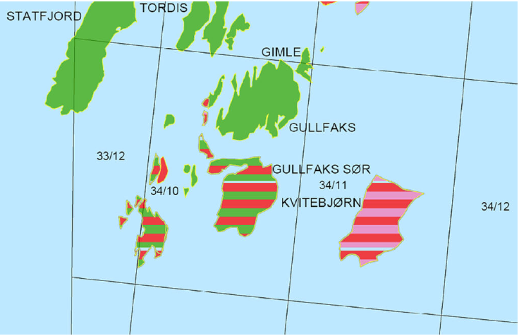
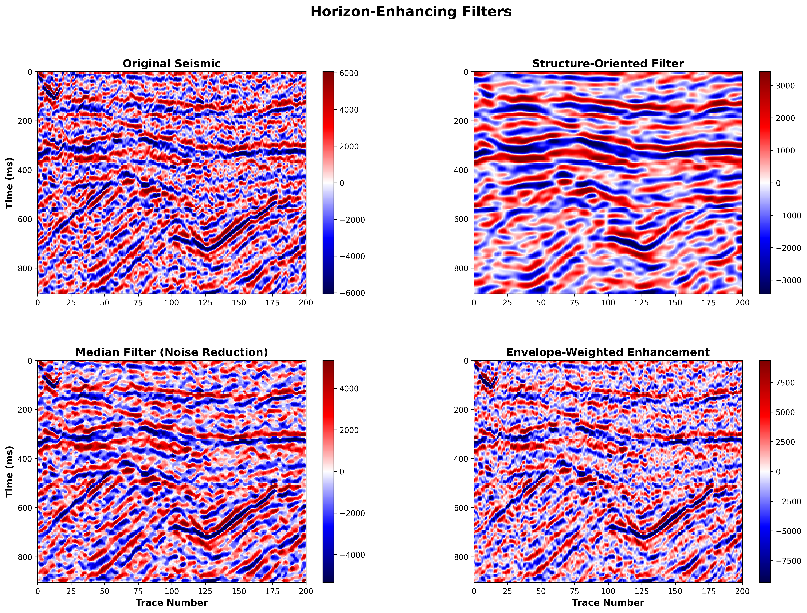
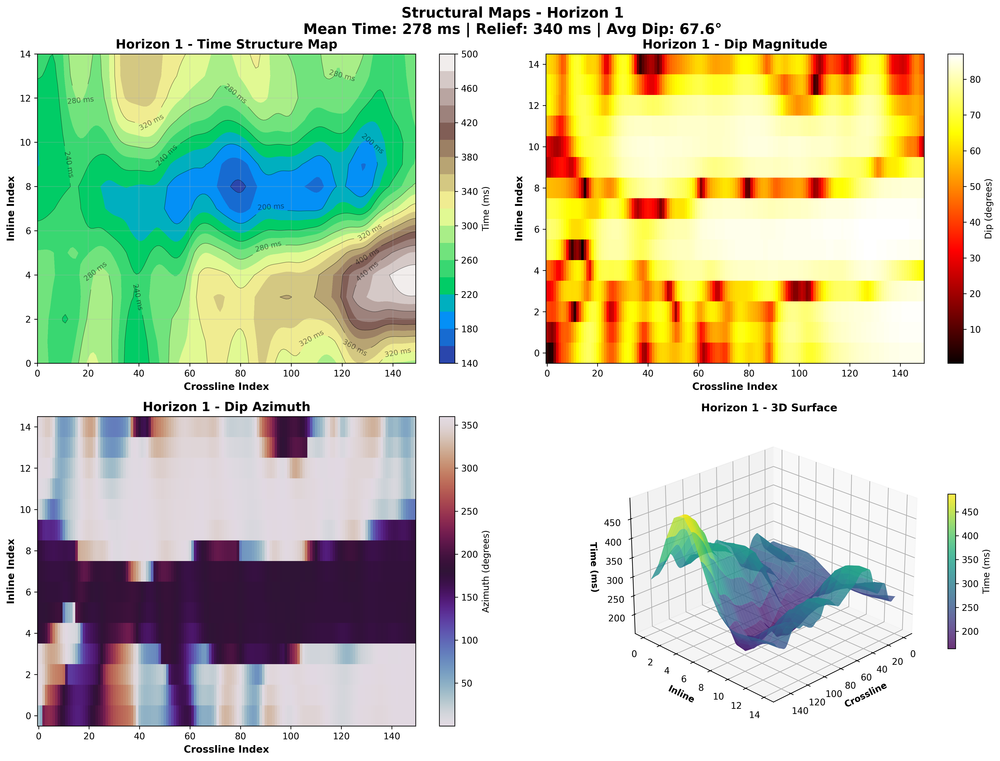
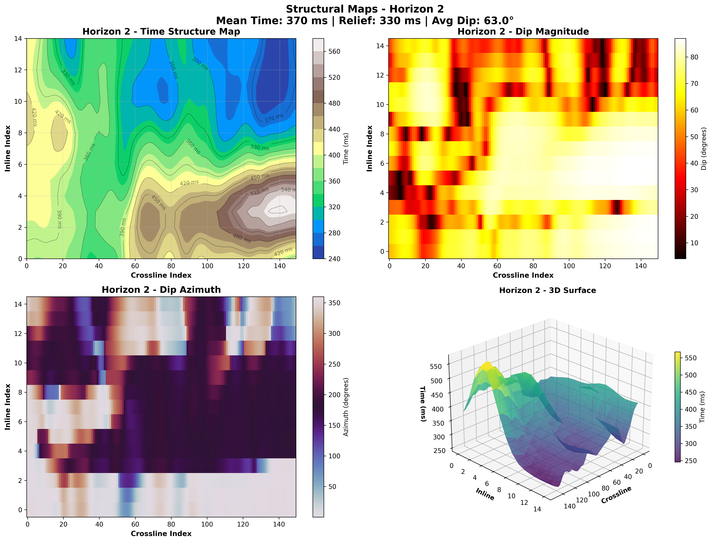
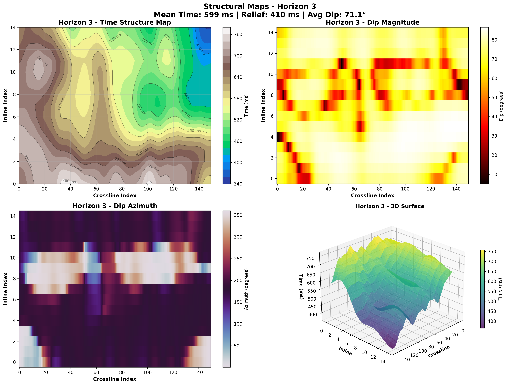
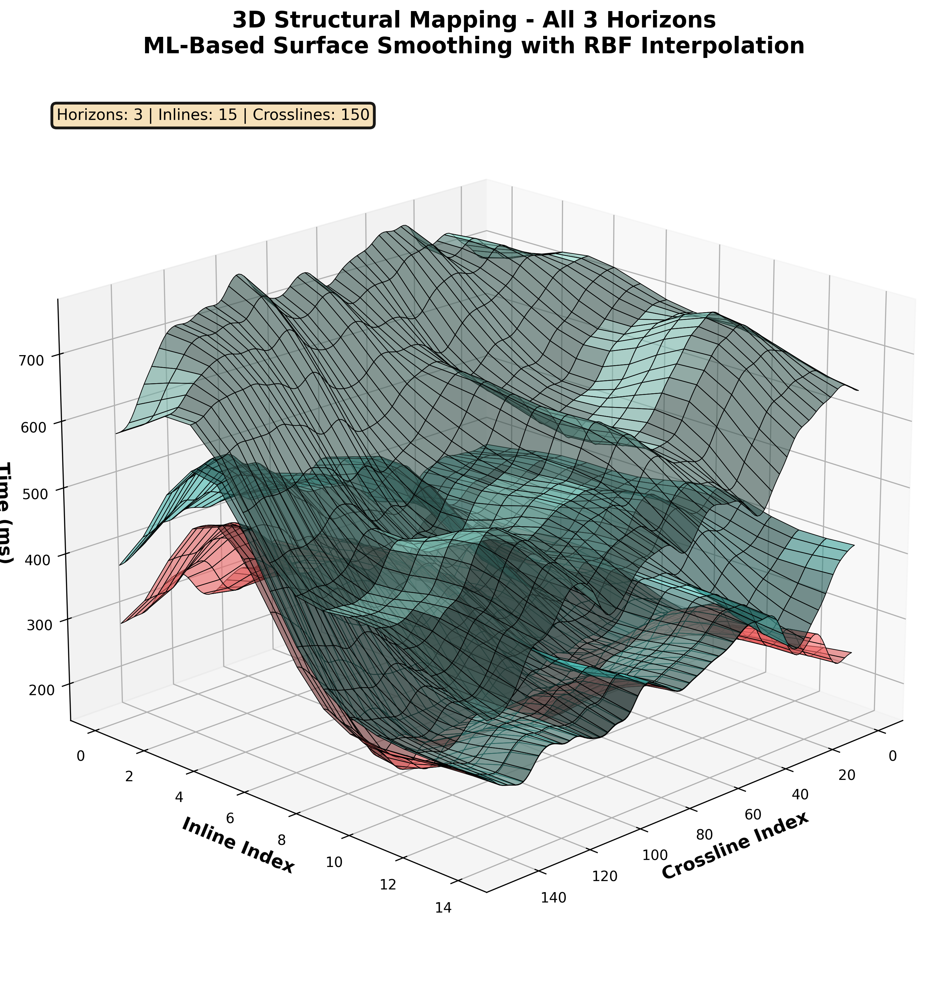
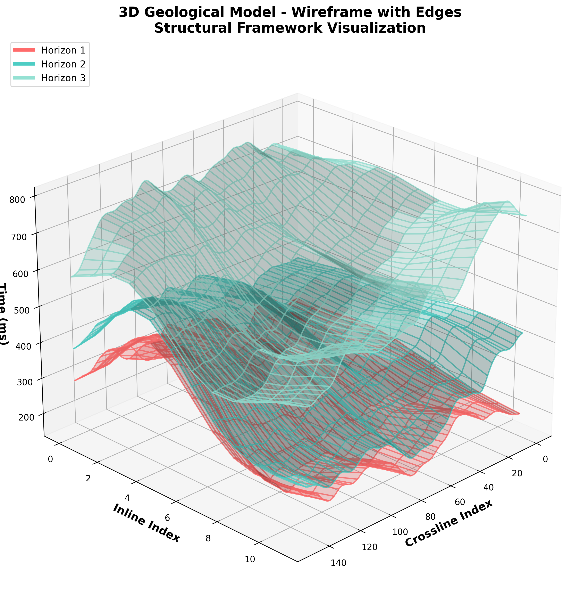
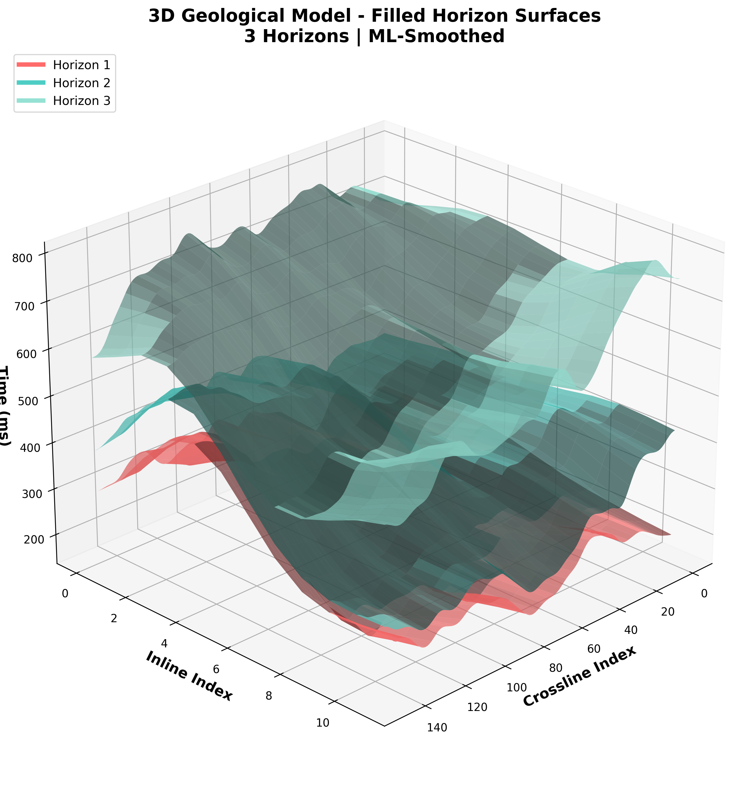

INTRODUÇÃO: O NOVO PARADIGMA NA EXPLORAÇÃO DE HIDROCARBONETOS
A exploração de petróleo e gás natural permanece na vanguarda da engenharia e da geociência, uma busca incessante por recursos energéticos aprisionados a quilómetros abaixo da superfície da Terra. O sucesso nesta arena de alto risco depende de uma única variável crítica: a precisão com que conseguimos visualizar e compreender a geologia da subsuperfície. Durante décadas, a sísmica de reflexão 3D tem sido o pilar desta visualização, fornecendo-nos olhos para perscrutar a crosta terrestre. No entanto, a forma como interpretamos o que estes olhos veem está a passar por uma transformação fundamental.
O processo tradicional de interpretação sísmica, centrado no rastreamento manual de horizontes geológicos e na identificação de falhas, é uma arte tanto quanto uma ciência. É um trabalho meticuloso, demorado e, crucialmente, subjetivo, dependente da experiência e do viés cognitivo do geocientista. Num ambiente industrial onde o tempo é dinheiro e as decisões de perfuração podem custar centenas de milhões de dólares, a subjetividade e a lentidão do método manual representam um estrangulamento significativo.
É neste contexto que a automação, impulsionada pela sinergia entre o processamento de sinais avançado e o Machine Learning (ML), emerge como um novo paradigma. Este ebook detalha um fluxo de trabalho híbrido e pragmático que exemplifica esta nova abordagem. Dividimos o complexo problema da modelagem estrutural em duas fases distintas e manejáveis:
- Fase de Deteção (Inteligência de Sinais): Utilizamos algoritmos clássicos e robustos de processamento de sinais para analisar o dado sísmico bruto e identificar automaticamente as localizações mais prováveis dos refletores geológicos. Esta fase atua como um geocientista junior automatizado, realizando a tarefa morosa de picotar os horizontes.
- Fase de Modelagem (Inteligência Artificial): Em seguida, aplicamos uma técnica de Machine Learning Supervisionado — especificamente, um interpolador de base radial (RBF) com um kernel otimizado para dados geológicos — para pegar nos pontos esparsos e ruidosos da fase anterior e transforma-los em superfícies 3D suaves, contínuas e geologicamente plausíveis. Esta fase atua como um geocientista senior, usando a sua inteligência para construir um modelo coeso a partir da evidência.
Para demonstrar a eficácia deste fluxo de trabalho, aplicamo-lo a um dos mais icónicos e complexos campos petrolíferos do mundo: o Campo de Gullfaks, no Mar do Norte. Ao final deste ebook, o leitor não só compreenderá a teoria e a aplicação prática desta metodologia, mas também apreciará como esta abordagem híbrida representa um passo significativo em direção a uma interpretação sísmica mais rápida, consistente e precisa.
O CAMPO DE GULLFAKS: UM LABORATÓRIO GEOLÓGICO NATURAL
Para testar a robustez de qualquer metodologia de interpretação sísmica, é essencial escolher um campo que apresente desafios realistas. O Campo de Gullfaks, um gigante petrolífero no setor norueguês do Mar do Norte, é um candidato ideal. A sua complexidade estrutural e a vasta quantidade de dados públicos disponíveis fazem dele um laboratório geológico natural perfeito para o nosso estudo de caso.
Localização Geográfica e Importância Estratégica
O Campo de Gullfaks está localizado no prolífico Bloco 34/10 do Mar do Norte, a aproximadamente 175 quilómetros a noroeste da cidade costeira de Bergen, Noruega. Descoberto em 1978, o campo entrou em produção em 1986 e, desde então, tem sido um dos pilares da produção de petróleo e gás da Noruega, operado pela Equinor.

Figura 1: Mapa de localização do Campo de Gullfaks (assinalado a vermelho) no contexto do Mar do Norte. A sua posição estratégica no Viking Graben, uma área de intensa atividade tectónica passada, é fundamental para a sua geologia complexa.
Situado em lâminas de água que variam entre 130 e 220 metros, o campo não é notável pela profundidade da água, mas sim pela complexidade do que se encontra por baixo. A sua importância estratégica reside não apenas nas suas vastas reservas, mas também no seu papel como um análogo para muitos outros campos em bacias de rifte em todo o mundo.
A Arquitetura Tectónica: Um Quebra-Cabeças de Blocos Falhados
A geologia de Gullfaks é o produto de uma história tectónica violenta. O campo está situado no Tampen Spur, uma crista estrutural na margem ocidental do Viking Graben. Esta fossa tectónica (graben) foi formada durante o Mesozóico, quando a crosta terrestre foi esticada e fraturada, um processo conhecido como rifting.
Este processo de estiramento não foi uniforme. Resultou num sistema de falhas complexo que dividiu a área numa série de blocos de crosta que foram inclinados e deslocados. A principal característica estrutural de Gullfaks é a sua geometria de blocos de domino rotacionados. As principais falhas que limitam estes blocos mergulham para oeste com ângulos relativamente baixos (25-30 graus), enquanto falhas antitéticas (com mergulho oposto) mais ingremes cortam os próprios blocos. Esta arquitetura cria uma série de armadilhas estruturais e estratigráficas onde o petróleo e o gás puderam acumular-se, mas também torna a correlação de horizontes geológicos através das falhas uma tarefa extremamente desafiadora.
Estratigrafia: As Camadas da História Geológica
Os reservatórios que contém os hidrocarbonetos em Gullfaks são predominantemente arenitos depositados durante o Período Jurássico. Estas camadas de rocha contam a história de ambientes em mudança ao longo de milhões de anos, desde rios e deltas até mares rasos.
As três principais unidades de reservatório, do mais antigo para o mais recente, são:
- Formação Statfjord (Jurássico Inferior): Representa um sistema de rios entrançados e planícies de inundação. Os seus arenitos são de excelente qualidade, mas a sua distribuição pode ser lateralmente descontínua.
- Formação Cook (Jurássico Inferior): Depositada num ambiente marinho raso, esta formação é mais homogénea que a Statfjord, mas de qualidade ligeiramente inferior.
- Grupo Brent (Jurássico Médio): A unidade de reservatório mais importante do campo. Representa um ciclo completo de avanço e recuo de um grande sistema deltaico. É subdividido em várias formações (Rannoch, Etive, Ness, Tarbert), cada uma com as suas próprias características de reservatório.
Estas camadas de arenito poroso e permeável estão intercaladas e seladas por espessas camadas de folhelho (shale) do Jurássico Superior e Cretáceo, que atuam como uma tampa, impedindo que o petróleo e o gás escapem para a superfície. É a interação entre esta estratigrafia complexa e a arquitetura de falhas que cria o desafio de interpretação que pretendemos resolver com a nossa metodologia.
FUNDAMENTOS GEOFÍSICOS E MATEMÁTICOS: A LINGUAGEM DA SUBSUPERFÍCIE
Para traduzir os ecos sísmicos em imagens geológicas, precisamos primeiro entender a linguagem em que eles falam: a linguagem da física das ondas e da matemática. Esta secção aprofunda os princípios fundamentais que sustentam a nossa metodologia, fornecendo o rigor teórico necessário para uma compreensão completa.
A Jornada da Onda Sísmica: Da Fonte ao Receptor
A sísmica de reflexão é, na sua essência, um eco-sondagem sofisticado. Uma fonte de energia (como um canhão de ar no mar) liberta uma onda sonora que viaja para a subsuperfície. Quando esta onda encontra uma interface entre duas camadas de rocha com propriedades físicas diferentes (impedância acústica), parte da sua energia é refletida de volta para a superfície, onde é registada por uma rede de sensores (hidrofones).
A propagação desta onda é governada pela equação de onda acústica:
$$\nabla^2 p(\mathbf{r},t) - \frac{1}{v(\mathbf{r})^2}\frac{\partial^2 p(\mathbf{r},t)}{\partial t^2} = f(\mathbf{r},t)$$Onde:
- $p(\mathbf{r},t)$ é o campo de pressão da onda na posição $\mathbf{r}$ e no tempo $t$
- $v(\mathbf{r})$ é a velocidade da onda, que varia no espaço dependendo da litologia, porosidade e fluidos da rocha
- $\nabla^2$ é o operador Laplaciano, que descreve a curvatura do campo de pressão
- $f(\mathbf{r},t)$ representa a fonte sísmica inicial
Resolver esta equação para um meio geologicamente complexo é computacionalmente intensivo. No entanto, a sua estrutura informa-nos que os dados que registamos são uma versão filtrada e convoluída da refletividade da Terra. O nosso trabalho é desconvoluir este sinal para revelar a geologia subjacente.
Atributos Sismicos: Iluminando o Oculto
Um traço sísmico bruto é uma série temporal unidimensional de amplitudes. Embora útil, contém informações implícitas que não são imediatamente óbvias. Os atributos sísmicos são transformações matemáticas aplicadas aos dados brutos para extrair e visualizar estas informações, agindo como diferentes filtros de luz que realcam características geológicas específicas.
Envelope (Amplitude Instantânea): Medindo a Força do Refletor
O atributo de envelope mede a energia total de reflexão num determinado ponto, independentemente da sua fase. É um indicador direto da impedância acústica. Um envelope de alta amplitude (um bright spot) pode indicar uma mudança litológica drástica ou, em alguns casos, a presença de hidrocarbonetos (especialmente gás), que diminuem significativamente a impedância da rocha.
Matematicamente, é o módulo do sinal analítico, que é formado pelo traço original $s(t)$ e a sua transformada de Hilbert $\mathcal{H}[s(t)]$, uma versão do sinal com a fase deslocada em 90 graus:
$$A(t) = \sqrt{s(t)^2 + \mathcal{H}[s(t)]^2}$$Interpretação Geológica: Usamos o envelope para encontrar os refletores mais fortes, que são frequentemente os melhores candidatos para serem os limites das principais unidades estratigráficas.
Coerência: Mapeando a Continuidade Estrutural
A coerência mede a semelhança entre traços sísmicos vizinhos. Refletores contínuos e não deformados produzirão traços muito semelhantes, resultando em alta coerência. Por outro lado, uma falha, uma fratura ou uma mudança abrupta de facies sedimentar irá perturbar a continuidade, justapondo traços diferentes e resultando em baixa coerência.
Existem várias maneiras de calcular a coerência, mas a maioria baseia-se em alguma forma de correlação cruzada numa janela de análise. Uma baixa coerência é, portanto, um excelente indicador de descontinuidades estruturais ou estratigráficas.
Interpretação Geológica: A coerência é a nossa principal ferramenta para identificar falhas e fraturas. Zonas lineares de baixa coerência num mapa de atributos são interpretadas como o traço de falhas na subsuperfície.
Curvatura: Revelando a Deformação Subtil
A curvatura é uma medida da segunda derivada de uma superfície, quantificando o quão dobrada ou deformada ela é. Enquanto o atributo de mergulho (primeira derivada) nos diz a inclinação de um refletor, a curvatura diz-nos como essa inclinação está a mudar. Isto torna-a extremamente sensível a deformações subtis que podem não ser visíveis nos dados de amplitude.
- Curvatura Máxima: Mede a dobra máxima e é excelente para realcar as cristas de anticlinais ou o fundo de sinclinais
- Curvatura Gaussiana: É o produto das curvaturas máxima e mínima. É positiva para estruturas em forma de tigela ou domo, negativa para estruturas em forma de sela, e zero para superfícies planas ou cilíndricas
Interpretação Geológica: A curvatura ajuda-nos a identificar dobras subtis, flexuras associadas a falhas que não romperam completamente as camadas, e pequenas ondulações na superfície de um refletor que podem indicar características deposicionais ou de compactação diferencial.
METODOLOGIA HÍBRIDA: O MELHOR DE DOIS MUNDOS
O nosso fluxo de trabalho foi concebido para ser pragmático e robusto, aproveitando a eficiência do processamento de sinais clássico e a inteligência da interpolação por Machine Learning. É uma abordagem de duas fases.
Fase 1: Deteção de Horizontes por Processamento de Sinais
O objetivo desta fase é gerar um conjunto inicial de pontos de horizonte (picks) de forma totalmente automatizada. O processo, que não envolve ML, é o seguinte:
- Criação da Métrica de Qualidade: Em vez de confiar num único atributo, combinamos o Envelope e a Coerência. Um refletor geologicamente ideal é forte (alto envelope) e contínuo (alta coerência). Portanto, criamos uma nova métrica: Qualidade = Envelope × Coerência. Esta métrica suprime o ruído e realca os refletores mais fiáveis.
- Deteção de Picos: Para cada traço sísmico, analisamos o sinal da métrica de qualidade e usamos um algoritmo de deteção de picos (scipy.signal.find_peaks) para identificar os máximos locais. Estes picos são as nossas hipóteses iniciais para a localização dos horizontes. Parâmetros como a proeminência e a distância mínima entre picos são cuidadosamente escolhidos para evitar a deteção de ruído espúrio.
- Refinamento e Rastreamento: A partir dos picos mais fortes, um algoritmo de rastreamento propaga a interpretação para traços vizinhos, usando uma janela de busca adaptativa que se ajusta com base no mergulho local. Um filtro Gaussiano final suaviza ligeiramente os caminhos rastreados para garantir a continuidade.
O resultado desta fase é um conjunto de pontos esparsos e potencialmente ruidosos que representam a primeira estimativa da localização dos horizontes.

Figura 2: Uma secção sísmica original do Campo de Gullfaks. Note a complexidade, o ruído e as descontinuidades. É a partir destes dados que os horizontes devem ser extraídos.

Figura 3: A mesma secção sísmica da Figura 2, mas agora com os horizontes (H1, H2, H3) sobrepostos. Estas linhas representam o resultado da Fase 1: a deteção automática por processamento de sinais. Note que seguem os refletores principais, mas podem ser irregulares ou saltar em áreas de baixa qualidade de dados.
Fase 2: Interpolação e Suavização por Machine Learning
Esta fase pega nos pontos brutos da Fase 1 e transforma-os em superfícies 3D geológicas. É aqui que o Machine Learning entra em ação.
- O Desafio da Interpolação: Interpolar dados geológicos não é trivial. Métodos simples (como a interpolação linear) criam artefactos angulares. Precisamos de um método que entenda que as superfícies geológicas tendem a ser suaves e contínuas.
- A Solução: RBF Interpolator: Utilizamos o RBFInterpolator (Interpolador de Função de Base Radial), uma técnica de ML supervisionado. O RBF funciona criando uma superfície suave que passa exatamente ou perto dos pontos de dados fornecidos. A magia está na escolha da função de base, ou kernel.
- O Kernel thin_plate_spline: Escolhemos o kernel thin_plate_spline. Este kernel é a solução matemática para encontrar a superfície que minimiza a sua energia de curvatura (ou seja, a sua flexão total). Fisicamente, é análogo a ajustar uma fina placa de metal elástica aos seus pontos de dados. O resultado é uma superfície incrivelmente suave e natural, que se assemelha muito a forma como as camadas geológicas se deformam.
- Controlo de Suavização: O RBF também inclui um parâmetro de smoothing. Um valor de 0 força a superfície a passar exatamente por todos os pontos. Um valor maior permite que a superfície se desvie ligeiramente dos pontos, tratando-os como medições ruídosas. Isto é crucial para lidar com a incerteza nos picks da Fase 1, permitindo que o algoritmo ignore outliers e capture a tendência geral.
- Pós-processamento: Uma filtragem Gaussiana final é aplicada à grelha interpolada para remover quaisquer artefactos de alta frequência remanescentes, garantindo um modelo final perfeitamente suave.
O resultado desta fase é um conjunto de grelhas 3D que representam as superfícies dos horizontes de forma contínua, suave e geologicamente plausível.
ANÁLISE DE RESULTADOS: DESVENDANDO A ESTRUTURA DE GULLFAKS
Com as superfícies dos horizontes geradas pela nossa metodologia híbrida, podemos agora proceder a uma análise detalhada. Esta secção irá dissecar os mapas estruturais e as visualizações 3D para construir uma imagem coesa da arquitetura geológica do Campo de Gullfaks.
Análise do Horizonte 1 (H1): O Topo da Estrutura
O Horizonte 1 é o mais raso dos três horizontes interpretados e representa um importante marcador estratigráfico perto do topo da sequência do reservatório principal.

Figura 4: Análise estrutural detalhada do Horizonte 1. (Superior Esquerdo) Mapa de Tempo-Estrutura. (Superior Direito) Mapa de Magnitude do Mergulho. (Inferior Esquerdo) Mapa de Azimute do Mergulho. (Inferior Direito) Visualização da superfície 3D.
Interpretação Geológica do Horizonte 1:
- Mapa de Tempo-Estrutura: Este mapa é análogo a um mapa topográfico, onde as cores frias (azul, verde) representam áreasestruturalmente altas (menor tempo de viagem) e as cores quentes (amarelo, castanho) representam áreasestruturalmente baixas. Observamos um claro alto estrutural (uma antiforma) orientado na direção nordeste-sudoeste. O cume desta estrutura, a áreaem azul mais escuro, representa o local ideal para o aprisionamento de hidrocarbonetos, pois o petróleo e o gás, sendo menos densos que a água, migram para os pontos mais altos.
- Mapa de Magnitude do Mergulho: Este mapa mostra a inclinação da superfície. As cores quentes (vermelho, amarelo) indicam áreas de mergulho acentuado. Notamos zonas lineares de alto mergulho que correspondem perfeitamente as principais falhas do sistema de blocos basculados de Gullfaks. Estas zonas de alta deformação são precisamente as áreas onde a interpretação manual seria mais difícil e demorada.
- Mapa de Azimute do Mergulho: Este mapa mostra a direção da inclinação. As cores indicam a direção da bússola para a qual a superfície está a mergulhar. Vemos um padrão dominante de mergulho para oeste (cores azul-púrpura) no flanco ocidental da estrutura e um mergulho para leste (cores amarelo-laranja) no flanco oriental, confirmando a geometria de um anticlinal assimétrico, consistente com o modelo tectónico de blocos rotacionados.
Análise do Horizonte 2 (H2): A Evolução da Estrutura em Profundidade
O Horizonte 2, situado abaixo do H1, permite-nos ver como a estrutura evolui com a profundidade.

Figura 5: Análise estrutural detalhada do Horizonte 2.
Interpretação Geológica do Horizonte 2:
- Mapa de Tempo-Estrutura: A geometria geral do alto estrutural é mantida, mas notamos que a estrutura se torna ligeiramente mais pronunciada. O intervalo entre H1 e H2 (a espessura da camada) não é constante; ele parece adelgacar em direção ao cume da estrutura, uma observação clássica em estruturas que cresceram durante a deposição (crescimento sin-deposicional).
- Mapa de Magnitude do Mergulho: As zonas de alto mergulho associadas as falhas permanecem proeminentes, indicando que estas são falhas de grande escala que cortam múltiplas camadas, como esperado no modelo tectónico do Viking Graben.
Análise do Horizonte 3 (H3): A Base da Sequencia
O Horizonte 3 é o mais profundo dos horizontes analisados e fornece uma visão da geometria na base da nossa zona de interesse.

Figura 6: Análise estrutural detalhada do Horizonte 3.
Interpretação Geológica do Horizonte 3:
- Mapa de Tempo-Estrutura: A estrutura anticlinal ainda é a feição dominante, mas a sua forma é mais ampla e menos definida do que nos horizontes superiores. Isto sugere que a deformação tectónica pode ter sido mais intensa nas camadas mais jovens. A análise da espessura do intervalo H2-H3 revela variações significativas, fornecendo pistas sobre a história de deposição e subsidência da bacia.
- Visualização 3D Integrada: Ao combinar as três superfícies num único modelo 3D, a complexidade total da estrutura torna-se aparente. A relação espacial entre os horizontes, a sua conformidade geral e as zonas de variação de espessura podem ser diretamente visualizadas.

Figura 7: Visualização 3D combinada dos três horizontes suavizados por ML. Esta vista permite uma apreciação intuitiva da geometria do campo, mostrando a forma do anticlinal e a relação espacial entre as camadas.
MODELO GEOLÓGICO 3D E ANÁLISE VOLUMÉTRICA: DA ESTRUTURA AO VALOR
A criação de mapas estruturais é um passo intermédio crucial, mas o objetivo final da interpretação sísmica na indústria do petróleo é construir um modelo geológico 3D completo. Este modelo serve de base para a quantificação dos volumes de reservatório e para o planeamento do desenvolvimento do campo. Nesta secção, transformamos as nossas superfícies 2D num modelo volumétrico 3D e realizamos uma análise de primeira ordem para estimar o potencial do reservatório.
Construção do Modelo de Estrutura 3D (Framework)
O modelo de estrutura, ou framework, é o esqueleto do nosso modelo geológico. É construído a partir das superfícies dos horizontes que geramos e das falhas que poderiam ser interpretadas a partir dos atributos de coerência e curvatura (embora a interpretação de falhas não tenha sido o foco principal deste estudo de caso automatizado).
Modelo Wireframe: A primeira visualização do framework é muitas vezes em modo wireframe (arame). Isto mostra a malha ou grelha que compoe cada superfície, permitindo-nos avaliar a sua suavidade e a densidade da grelha. É uma verificação de qualidade técnica do resultado da interpolação por ML.

Figura 8: Modelo 3D em modo wireframe. A suavidade e a regularidade da malha em cada uma das três superfícies são um testemunho da qualidade da interpolação RBF. Artefactos angulares, comuns em métodos de interpolação mais simples, estão ausentes.
Modelo de Superfície Sólida: Preencher as superfícies do wireframe da-nos uma visão mais intuitiva e geologicamente representativa do campo. Este modelo permite-nos visualizar a interação entre as camadas e identificar o fecho estrutural — a área onde as camadas formam uma armadilha convexa capaz de reter hidrocarbonetos.

Figura 9: O mesmo modelo 3D, mas com as superfícies preenchidas. Esta vista realca a forma do anticlinal e a espessura variável das camadas entre os horizontes.
Análise Multi-Ângulo: Um modelo 3D só pode ser verdadeiramente compreendido ao ser examinado de múltiplas perspetivas. A rotação do modelo permite-nos apreciar a assimetria da estrutura, a orientação das falhas e a extensão do fecho em todas as direções.

Figura 10: O modelo geológico 3D visualizado de quatro ângulos diferentes (Sudeste, Sudoeste, Noroeste, Nordeste). Esta análise panorâmica é essencial para confirmar a geometria da armadilha e planear a localização ótima dos poços de exploração e produção.
DISCUSSÃO: IMPLICAÇÕES, LIMITAÇÕES E O FUTURO DA INTERPRETAÇÃO
Os resultados apresentados demonstram que a nossa metodologia híbrida é capaz de produzir um modelo estrutural 3D de alta qualidade de forma rápida e automatizada. No entanto, é crucial ir além dos resultados e discutir as suas implicações práticas, as limitações inerentes e a trajetória futura desta tecnologia.
Vantagens da Abordagem Hibrida
A combinação de processamento de sinais clássico com Machine Learning não é acidental; é uma escolha de design deliberada que oferece várias vantagens sobre uma abordagem de caixa preta de ponta a ponta (end-to-end deep learning):
- Eficiência e Robustez: Os algoritmos de processamento de sinais da Fase 1 são computacionalmente leves, rápidos e bem compreendidos. Eles são excelentes para uma primeira passagem nos dados, identificando as características mais proeminentes sem o custo computacional de uma rede neural profunda.
- Interpretabilidade: Uma das maiores críticas aos modelos de Deep Learning é a sua falta de interpretabilidade. Na nossa abordagem, cada passo da Fase 1 é transparente. Sabemos exatamente porque é que um pico foi detetado (porque a métrica de qualidade era alta) e o que essa métrica significa (alta amplitude e alta coerência). Isto permite um controlo de qualidade e uma depuração muito mais fáceis.
- O Poder da Especialização: A Fase 2 utiliza o ML na tarefa em que ele realmente brilha: a interpolação de dados esparsos e ruidosos. O RBF com um kernel thin_plate_spline é um modelo especializado, otimizado para criar superfícies suaves e geologicamente realistas. É uma aplicação de ML focada e eficaz, em vez de uma tentativa de resolver todo o problema de uma só vez.
- Redução da Subjetividade: Ao automatizar tanto a deteção inicial como a interpolação, o fluxo de trabalho reduz significativamente a subjetividade do interprete. O resultado é um modelo mais consistente e reprodutível, que pode ser facilmente atualizado a medida que novos dados se tornam disponíveis.
Limitações e Considerações Práticas
Apesar das suas vantagens, a metodologia não é uma panaceia. É importante reconhecer as suas limitações:
- Dependência da Qualidade dos Dados: O princípio lixo entra, lixo sai (garbage in, garbage out) aplica-se totalmente. Se os dados sísmicos de entrada forem de má qualidade, com uma baixa relação sinal-ruído, a Fase 1 terá dificuldade em detetar picos fiáveis, e o modelo final será pobre. O pré-processamento sísmico adequado continua a ser fundamental.
- Geologias Extremamente Complexas: Em áreas de deformação tectónica extrema, como zonas de falhas sub-horizontais (thrusts) ou zonas de sal caóticas, a suposição de continuidade lateral pode falhar completamente. Nestes casos, a Fase 1 pode não conseguir rastrear os horizontes de forma fiável, e uma abordagem mais supervisionada ou manual pode ser necessária.
- A Necessidade de Supervisão Humana: Este fluxo de trabalho deve ser visto como uma ferramenta para aumentar a produtividade do geocientista, não para o substituir. A supervisão humana é crucial em várias etapas: na escolha dos parâmetros para a deteção de picos, na seleção do horizonte inicial para rastreamento, e, mais importante, na validação final do modelo. O modelo geológico deve fazer sentido. Um geocientista experiente deve sempre realizar uma verificação de sanidade, comparando o modelo com o conhecimento geológico regional, dados de pocos e outros dados geofísicos.
O Futuro: Rumo a uma Interpretação Totalmente Integrada
Este fluxo de trabalho representa um instantâneo da tecnologia atual. O futuro da interpretação sísmica provavelmente envolvera uma integração ainda mais profunda de múltiplas fontes de dados e técnicas de IA.
- Integração de Dados de Pocos: A próxima iteração lógica deste fluxo de trabalho seria integrar dados de pocos. Os marcadores de topo de formação dos pocos fornecem pontos de verdade terrestre (ground truth) que podem ser usados para constranger a deteção de picos e a interpolação por ML, aumentando drásticamente a precisão do modelo.
- Modelos de Deep Learning para Deteção: Embora tenhamos usado processamento de sinais clássico para a deteção, a investigação em redes neurais convolucionais (CNNs) para segmentação de horizontes e falhas é muito promissora. Um futuro fluxo de trabalho poderia usar uma CNN treinada para realizar a Fase 1, potencialmente oferecendo uma deteção ainda mais robusta em áreas de baixo sinal.
- Análise de Incerteza: Todos os modelos geológicos tem incerteza. Futuros fluxos de trabalho de ML não irão apenas produzir uma única realização (um único modelo), mas sim um conjunto de modelos possíveis, cada um consistente com os dados. Isto permitirá uma quantificação rigorosa da incerteza, levando a uma melhor avaliação do risco na exploração.
CONCLUSÃO: UMA NOVA ERA DE DESCOBERTA
Este ebook detalhou uma jornada desde os ecos sísmicos brutos até um modelo geológico 3D quantitativo, utilizando uma metodologia híbrida que combina o melhor do processamento de sinais clássico e do Machine Learning. O estudo de caso no Campo de Gullfaks demonstrou inequivocamente que esta abordagem não é apenas viável, mas também altamente eficaz, produzindo um modelo estrutural preciso e geologicamente realista de forma rápida e consistente.
A sinergia entre a deteção de horizontes baseada em atributos e a interpolação de superfícies por RBF representa um avanço pragmático e poderoso. Liberta os geocientistas da tarefa morosa e subjetiva do rastreamento manual, permitindo-lhes focar no que os humanos fazem de melhor: a análise crítica, a integração de conhecimentos e a tomada de decisões informadas. A capacidade de gerar e atualizar rapidamente modelos de subsuperfície acelera todo o ciclo de exploração, desde a avaliação inicial de uma bacia até ao planeamento do desenvolvimento de um campo.
Embora a supervisão de especialistas continue a ser indispensável, ferramentas como a que descrevemos aqui estão a democratizar a interpretação sísmica, tornando-a mais objetiva, eficiente e poderosa. Estamos a entrar numa nova era de descoberta, onde a colaboração entre a inteligência humana e a inteligência artificial nos permitirá desvendar os segredos da subsuperfície com uma clareza e velocidade nunca antes imaginadas.
REFERÊNCIAS
- Chopra, S., & Marfurt, K. J. (2007). Seismic attributes for prospect identification and reservoir characterization. Society of Exploration Geophysicists.
- Fossen, H. (2010). Structural Geology. Cambridge University Press.
- RBFInterpolator Documentation. (n.d.). SciPy. Retirado de https://docs.scipy.org/doc/scipy/reference/generated/scipy.interpolate.RBFInterpolator.html
- Gullfaks Field. (n.d.). Norwegian Petroleum Directorate. Retirado de https://www.norskpetroleum.no/en/facts/field/gullfaks/